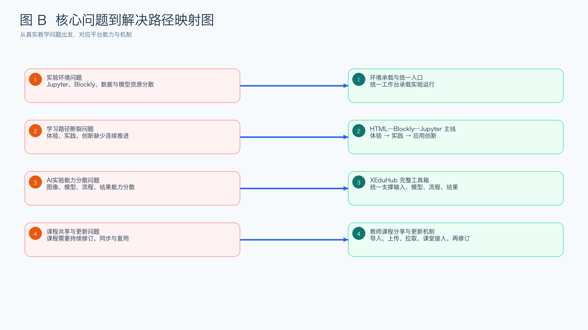
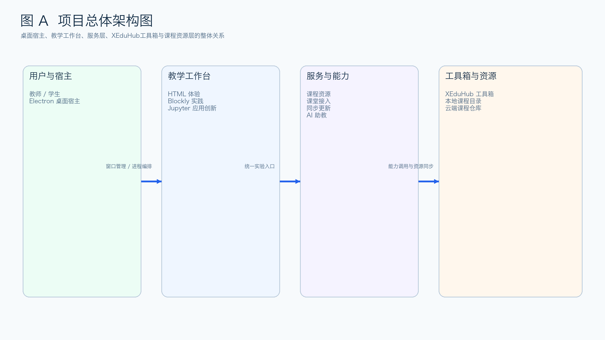
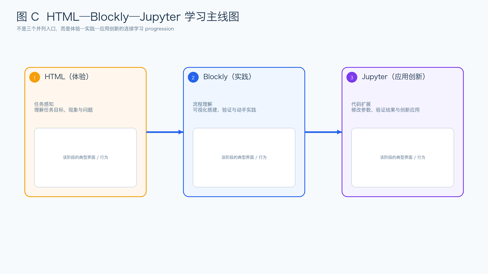
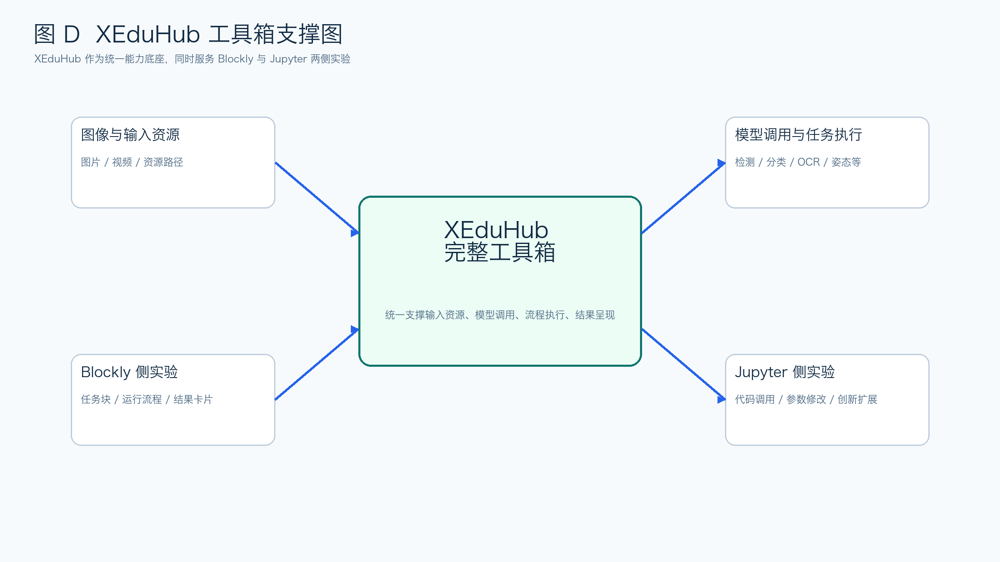
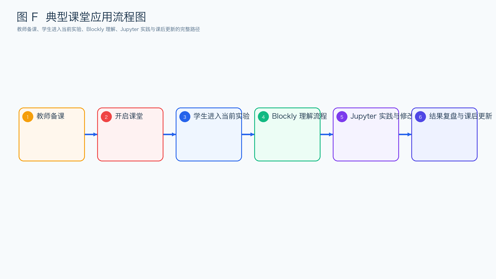
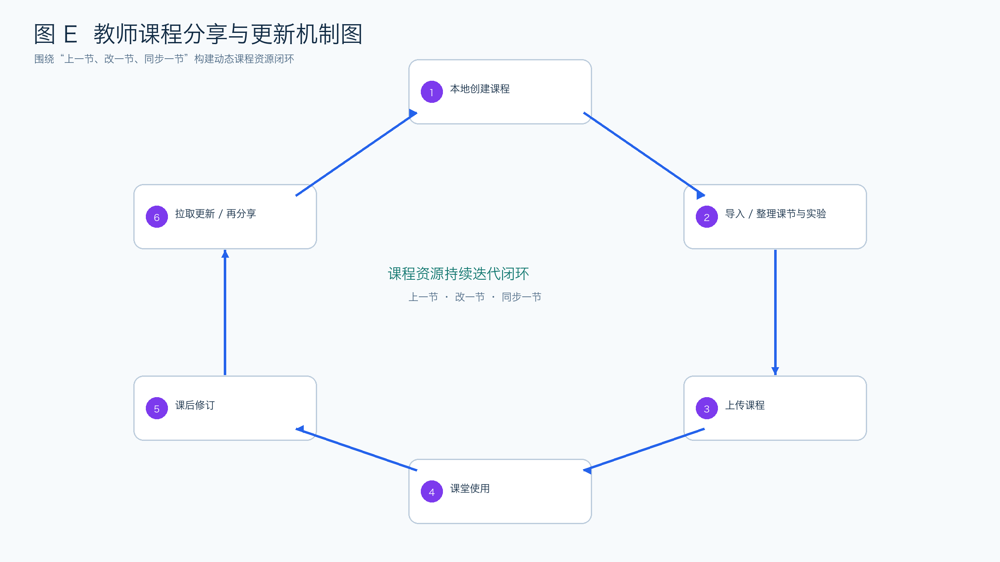

项目一句话定位
XEdu Client 是一个以实验环境承载为基础、以 HTML—Blockly—Jupyter 为学习主线、
以 XEduHub 为能力工具箱、以教师课程分享与更新机制为平台闭环的人工智能教学实验平台。
一、开发背景
四类核心问题
- 实验环境问题：Jupyter、Blockly、Python、样例数据和模型资源分散，环境难搭、入口难管、课堂时间被运行问题消耗。
- 学习路径断裂问题：学生从讲解页到图形化实践，再到代码创新之间缺少连续设计，导致“看过了不等于会做”。
- AI 实验能力分散问题：图像输入、模型调用、流程执行、结果展示等能力分散在多个工具和脚本里，难以复用。
- 课程共享与更新问题：课程资源不是静态文件，而是会随着教学推进不断修订、同步和再分享的动态内容。

平台化回应
基于上述问题，项目不再被定义为单一实验工具，而是被组织为一个更像平台的人工智能教学实验环境：
一方面承载 Jupyter、Blockly 与本地实验运行环境，降低部署和使用门槛；另一方面，以
HTML（体验）—Blockly（实践）—Jupyter（应用创新） 组织学生的连续学习路径，并结合
XEduHub 提供统一实验能力支撑；同时，面向教师建立课程资源的组织、分享、同步更新与持续迭代机制。
二、设计与开发
平台能力四层结构
- 实验环境承载层：统一承载 Jupyter、Blockly、本地运行与实验资源。
- 学习路径层：按 HTML（体验）—Blockly（实践）—Jupyter（应用创新）组织学生 progression。
- XEduHub 工具箱层：统一支撑图像输入、模型调用、流程执行与结果呈现。
- 课程与平台机制层：支撑教师的课程导入、上传更新、拉取同步、课堂接入与持续迭代。



开发过程要点
开发顺序不是先堆功能，而是先明确平台目标，再依次解决环境承载、学习主线、工具箱统一和教师课程机制。 其中，最关键的工程选择并不是某个单点技术，而是让课程、实验、课堂和更新机制在同一工作台里形成闭环。
三、应用过程与效果
典型课堂使用路径
教师先在课程资源中准备实验包，再让学生从讲解页进入 `01_目标检测与细粒度分类`，理解任务目标和流程逻辑； 随后进入 Blockly 工作区观察“检测、裁剪、分类”的串联关系；再切换到 Jupyter，继续阅读和运行对应代码； 最后结合结果图或课堂讨论完成总结与复盘。课后教师还可以继续修订课程、上传更新并同步到后续课堂。


效果表达建议
这部分最终仍建议补真实课堂数据，但即便暂时没有完整量化数据，也要至少写清教师和学生两侧的收益： 学生更容易保持任务上下文，教师更容易组织课程并在课后继续更新资源，课程也更容易沉淀为可持续复用的平台资产。
四、创新与反思
核心创新
- 不是多个入口并列，而是
HTML—Blockly—Jupyter的连续学习主线。 - 不是把 AI 能力散落在脚本里，而是以
XEduHub建立统一工具箱底座。 - 不是只关心实验能否运行，而是把教师课程分享、同步更新与持续迭代纳入平台闭环。
- 在开发过程中引入生成式人工智能，提升教师或小团队跨界开发教育工具的能力。
